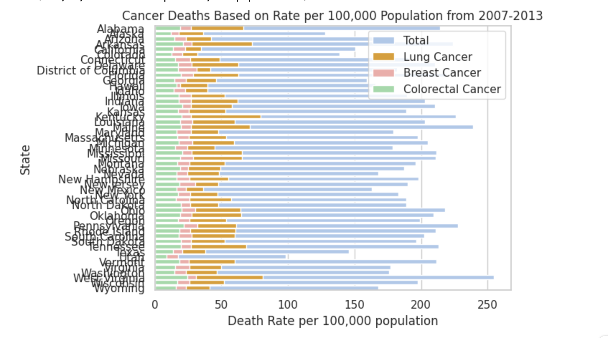
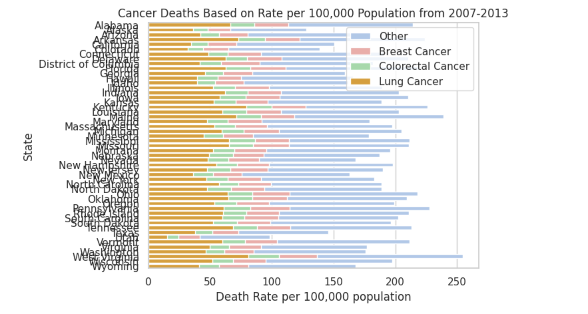
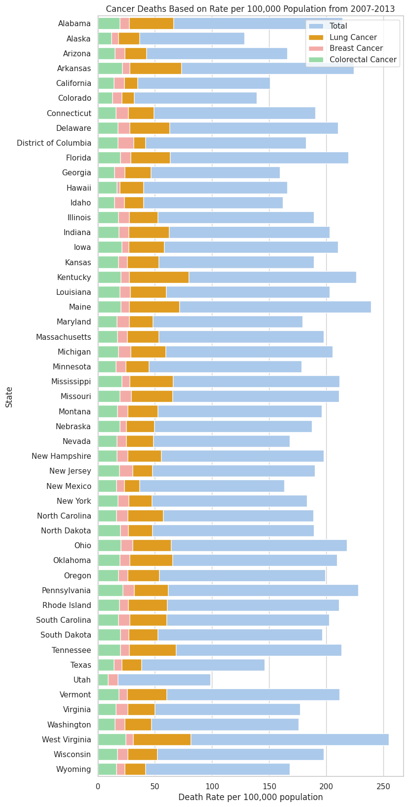
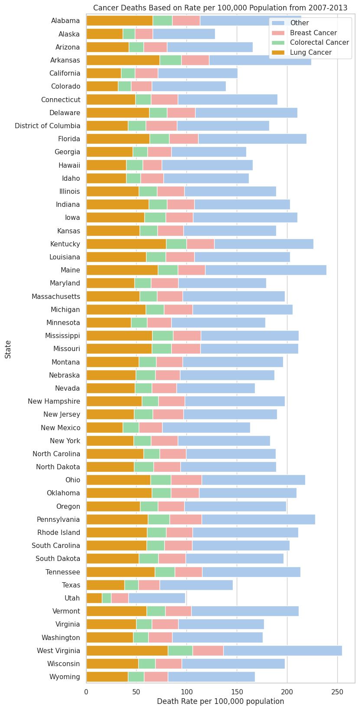
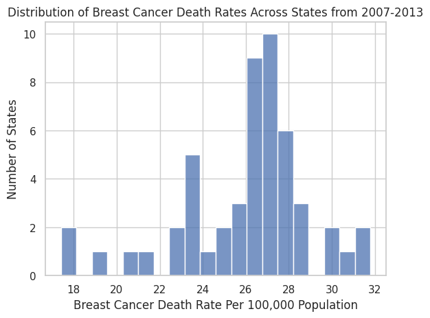
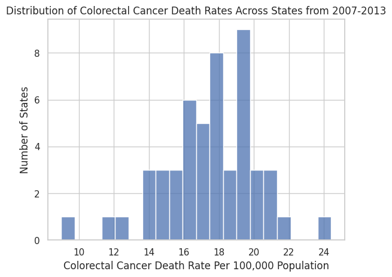
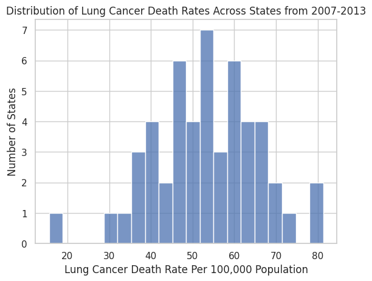

The reason as to why I chose this dataset is because cancer has always been a topic that I wanted to learn more about. Several members of my family have been diagnosed with cancer. In 2018, I lost my grandfather, who was a father figure to me, to cancer. After witnessing the pain that he went through, I made it my goal to become an oncologist and cancer researcher. I was very curious to learn about cancer and so, when we first started this project, I thought it was a perfect opportunity to explore and learn about specific cancer statistics. My initial guiding questions were: In what geographic areas are more people diagnosed with cancer? And what types of cancer? What is the biological sex of the patients? How old are they? The Cancer CSV File from the CORGIS Dataset Project contained statistics regarding cancer death rates for each state based on race, age, and gender. Therefore, I chose to work with this dataset because it contained information that related to the questions I was asking. As I started to decide how to represent my data, I realized that it would be difficult to present the data based on the factors of race, age, and gender. Unlike in other data sets, each statistic in my data set was a death rate for a specific state based on a specific set of factors. The statistics were not data on individuals. Furthermore, unlike in other datasets, the death rates in this dataset were values that had already been calculated. The death rates were all data from 2007-2013, so the values that I had were already calculations that had been made. Therefore, I couldn't do what I had initially hoped to do (which was to see how multiple factors affected the cancer death rates). So, I decided to compare the total cancer deaths (the rate per 100,000 population from 2007-2013) with the cancer deaths due to specific types of cancer. My central question became "What does the distribution of breast, lung, and colorectal cancer death rates look like in each state in comparison with one another?" Another question that I wanted to touch upon and discuss was "What are possible reasons as to why there are more death rates in a specific state?"


The two barplots above were my initial barplots. The one on the left showed the death rates for each cancer type and the total cancer death rate stacked on top of one another. This caused a problem because in some states, you could barely see a certain type of cancer because it was being blocked by another bar. This is why I created the barplot on the right. Here, the total cancer death rate for each state is put as the "foundation"/base since that value will always exceed any of the other cancer death rates. In this barplot, you can clearly see the portion of death rates caused by each type of cancer (in comparison to the total death rate). As shown in the key on the top right of each picture, each colored bar represents a different type of cancer or the total cancer death rate.


I created these two modified barplots because in my intial two diagrams, the names of the states on the y-xis were overlapping. This made it difficult to clearly see which bar corresponded to each state. So in these two barplots, the states on the y-axis are spaced out.



I created the histograms because they allowed me to clearly see the distribution of the death rates for each type of cancer among the states. While the barplot also showed the numerical values on the x-axis, the histograms gave a more in depth view of the range of cancer death rates for each type of cancer. These diagrams also made it easier to see how many states had a certain number of death rates for each type of cancer. The histograms (and the barplot) made me realize just how much higher the lung cancer death rates were in comparison to the other two. (Check the x-axis of the histograms and compare them to see the difference in death rates.)
As one of my calculations from this dataset, I decided to find the mean for each of the cancer types. The results were:
Types.Lung.Total: 53.205882
Types.Breast.Total: 26.009804
Types.Colorectal.Total: 17.503922
This calculation helped provide an answer to my central question. From the calculation, I was able to clearly see that the death rate for breast cancer was about half of the death rate for lung cancer and that the death rate for colorectal cancer was about one third of the death rate for lung cancer. These numbers are supported by the barplot.
Through the barplot, I was able to compare the cancer death rates for each type of cancer with each other, the death rates of those three types of cancer combined to the total cancer death rates, and the cancer death rates among the states. Therefore, this diagram was really effective in helping to see the comparisons clearly. The answer to my central question is this: In most of the states, with a few exceptions, lung cancer was the cause of the most deaths (when compared to breast and colorectal cancer). The death rates of breast and colorectal cancer were very similar for each state, but the breast cancer death rates were usually a bit higher. In addition, I noticed that lung, breast, and colorectal cancer made up about 50% of all cancer death rates (per 100,000 population from 2007-2013) in each state. Through the barplot, I also noticed that certain states had higher death rates for a specific type of cancer. For example, West Virginia had a very high death rate for lung cancer. After making this observation, I learned that a lot of coal mining takes place in West Virginia, meaning that many people are exposed to the dust from coal. This helps explain why lung cancer death rates were much higher in that state. I did some further research and I learned that smoking is most common in West Virginia, Kentucky, and Tennesee, which also helps explain why the lung cancer death rates in those three states are among the highest. These answers helped me answer the second question that I wanted to touch upon: "What are possible reasons as to why there are more death rates in a specific state?"
The three key takeaways I had from this project were these:
1. Among lung cancer, breast cancer, and colorectal cancer, lung cancer has the highest death rates in all but one state (which was Utah).
2. Factors such as working conditions and smoking have a huge impact on the cancer death rates, especially lung cancer death rates, in each state.
3. The combined value of lung, breast, and colorectal cancer death rates constitute around 50% of all cancer death rates (per 100,000 population from 2007-2013).